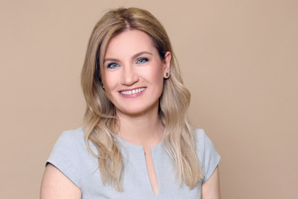

Little People este o Asociatie care ofera ajutorul care copii si adolescenti diagnosticati cu cancer au nevoie.
Nascuta in 1996 in Cluj-Napoca din initiativa fondatorilor sai: Katie si Shajjad Rizvi, azi organizatia ofera domeniului de oncologie pediatrica
o intreaga gama de servicii de calitate, programe zilnice de suport psihosocial pentru pacienti, evenimente complexe pentru tinerii supravietuitori de cancer,
profesionalism in coordinarea voluntariatului, ajutor material pentru saloanele de spital prin proiecte de renovatii ale camerelor de joaca, donatii de echipament medical si achizitia medicamentelor greu de gasit
precum si implicare si ingrijorare constanta de la o echipa foarte dedicata.

“I remember fondly my first encounter with a child from the Oncology Institute in Cluj. I was deeply impressed by his unabashed playfulness, his spontaneous acceptance of his situation, and his resourcefulness in dealing with the difficulty of colouring the edges of one of his grandmother’s magazines, one hand numb from the IV-drip. I think that was when I fully realised that, while in our eyes he was just a really sick child, he saw himself as he always did: a little kid who was really antsy to play. And I believe he wanted us to see him in the same light.
Since then, I met thousands of children with cancer in Romania, I established a very well-structured program that offers them systematic support, not only for these little patients, but also for their families, a program that provides them with psychosocial interventions based on the relevant international literature and clinical methods, as well as many years of experience in the field. Nevertheless, at the heart of this organisation lies the deep conviction that motivates us in all the activities we organise and all the programs we plan: a child is a child, whether he is sick or not. Even the sickest children have a right to live every moment of their lives to the fullest. Our attitude towards them must strongly convey to them the same message: that “it’s ok” for them to laugh, play, tell jokes and be happy!
The children with cancer do not belong to a different race or caste. They are just like any other child, the only difference is that they’re facing a very serious challenge that could at times put their lives in danger. They do not need our pity. But what they need is empathy that comes from the heart; they need care and attention, patience and total commitment on our part, as well as a good measure of professionalism.
Today, when I look at the Little People, I see the same set of values in each one of its members. I see dedication, commitment to the cause, the desire to learn new things, to work hard and without pause in order to make a difference. The centre of our universe will always remain that little patient, but our activity expanded more than I could have ever imagined. Many years ago we were looking for the best method to help the children from Romania cope with the disease and the changes they suffer as a result. Now, the big challenge that we’re facing is making sure that the complex program we created will remain sustainable and that it will be integrated in as many oncology institutions as possible. At the same time, we intend to study the impact of our interventions, to improve services, to try new methods, to learn new things, and to share our experience with others. Every year, the Little People Association is training students from the psychology field as well as other related sciences. These students, carefully selected, trained and supervised, provide the necessary human resources for our clinical activities. They are an indispensable and invaluable asset in the interactions we provide daily in the hospitals in Romania.”
Katie Rizvi, Founder
Little People Association
Misiunea acestei organizatii este sa imbunatateasca calitatea vietii copiilor si tinerilor afectati de cancer prin a oferi ajutor psihosocial in timpul perioadei de spitalizare la fel si dupa, astfel crescand rata de supravietuire a acestui grup.
Toate eforturile ale Asociatiei Little People graviteaza in jurul pacientului.
Toate activitatile pe care noi le planuim, toate taberele pe care le organizam si fiecare proiect pe care il dezvoltam se concentreaza pe nevoile pacientului si pe familia lor inati.